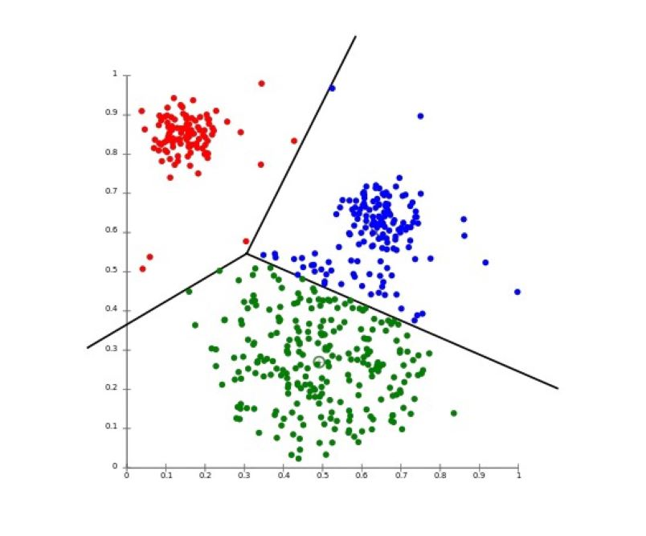

With Shapley Values
As we prepared for our final capstone project, our class was given the chance to work in smaller groups of three, where we could explore scaled-down versions of potential capstone projects. In our group, we decided to focus on stock valuation. Specifically, I aimed to investigate the connection between a stock's value and its classification as either overvalued or undervalued, leveraging unsupervised learning techniques to assess whether it could make informed investment recommendations for stocks.
We applied clustering methods to categorize all the stocks into three clusters, with the expectation that they would naturally segregate into distinct groups representing overvalued, undervalued, and fairly valued stocks. However, the testing phase revealed an accuracy rate of only 25% in terms of correctly assessing a stock's valuation. To delve into the factors that played the most significant role in feature selection, we conducted a Shapley values analysis
This project marked our group's initial foray into machine learning, serving as a valuable learning experience. In our ongoing quest to enhance stock valuation, we're considering a couple of strategies for the future. Firstly, we aim to leverage the Twitter API to scrape social media data and assess whether filtering out noise can enhance our classification accuracy. Additionally, we're exploring the possibility of implementing regression models to create a purely mathematical framework for calculating a stock's value based on its features, with the ability to compare this computed value against real-time stock prices. These approaches promise to provide more robust and reliable stock valuations in the future.